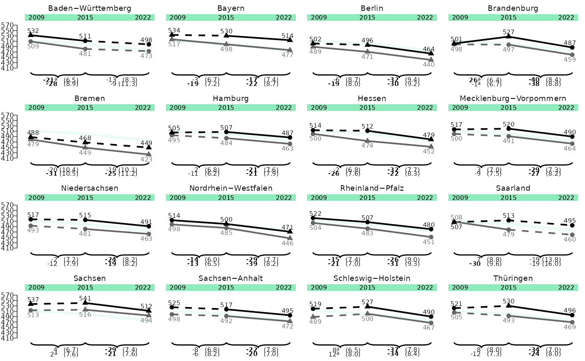
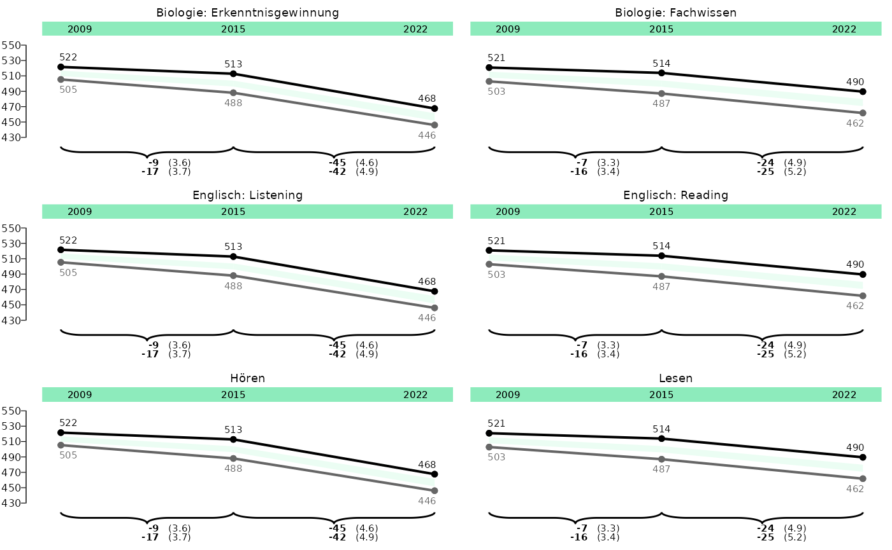

Lineplots
lineplots.RmdThis vignette shows you how to plot lineplots from
eatRep data. The workflow is optimized for
Bildungstrend-graphs, but can be expanded for plotting other
eatRep data as well.
Lineplot for one group
Let’s take example data from the trend_gender example
dataset. The first step in the workflow always is the data preparation.
This is needed to bring the eatRep data into the correct
format for plotting.
dat_lineplot_1 <- prep_lineplot(
trend_gender[[1]],
subgroup_var = "Kgender" ## Leave this argument if you have only one subgroup
)It might be necessary to do some slight manual data preparation:
## Don't do that if you only have one group in your data, or want to plot all groups
dat_lineplot_1 <- subset(dat_lineplot_1, subgroup_var == "total")
## For correctly displaying the state names:
dat_lineplot_1$state_var <- process_bundesland(dat_lineplot_1$state_var)And then we can already plot:
lineplot_1 <- plot_lineplot(dat_lineplot_1,
years_lines = list(c(2009, 2015), c(2015, 2022)),
years_braces = list(c(2009, 2015), c(2015, 2022)),
plot_settings = plotsettings_lineplot(
axis_y_lims = c(420, 540),
default_list = lineplot_4x4)
)
save_plot(lineplot_1, filename = "C:/Users/hafiznij/Downloads/lineplot_1_group.pdf", width = 160, height = 185, ,scaling = 1)Lineplot for two groups
dat_lineplot_2 <- prep_lineplot(
trend_gender[[1]],
subgroup_var = "Kgender"
)
dat_lineplot_2$state_var <- process_bundesland(dat_lineplot_2$state_var)
## We can set the order of the brace labels by setting the factor levels of the subgroup_var:
dat_lineplot_2$subgroup_var <- factor(dat_lineplot_2$subgroup_var, levels = c("weiblich", "maennlich", "total"), ordered = TRUE)
lineplot_2 <- plot_lineplot(
dat_lineplot_2,
years_lines = list(c(2009, 2015), c(2015, 2022)),
years_braces = list(c(2009, 2015), c(2015, 2022)),
background_subgroup = "total",
plot_settings = plotsettings_lineplot(
subgroup_colours = c(weiblich = "black", maennlich = cmyk(0, 0, 0, 60)), ## Here we determine the colours of the subgroups
axis_y_lims = c(410, 560),
default_list = lineplot_4x4
)
)
save_plot(lineplot_2, filename = "C:/Users/hafiznij/Downloads/lineplot_2_groups.pdf", width = 160, height = 185, scaling = 1)
lineplot_2
Lineplot for whole Germany 3x2
trend_ger <- do.call(rbind, lapply(trend_gender, prep_lineplot, subgroup_var = "Kgender"))
trend_ger <- subset(trend_ger, state_var == "total")
trend_ger$subgroup_var <- factor(trend_ger$subgroup_var, levels = c("weiblich", "maennlich", "total"), ordered = TRUE)
trend_ger$kb <- gsub("hoeren", "Hören", trend_ger$kb)
trend_ger$kb <- gsub("lesen", "Lesen", trend_ger$kb)
trend_ger_2 <- trend_ger
trend_ger_3 <- trend_ger
trend_ger_2$kb <- gsub("Lesen", "Englisch: Reading", trend_ger_2$kb)
trend_ger_2$kb <- gsub("Hören", "Englisch: Listening", trend_ger_2$kb)
trend_ger_3$kb <- gsub("Lesen", "Biologie: Fachwissen", trend_ger_3$kb)
trend_ger_3$kb <- gsub("Hören", "Biologie: Erkenntnisgewinnung", trend_ger_3$kb)
trend_total <- rbind(trend_ger, trend_ger_2, trend_ger_3)
lineplot_germany <- plot_lineplot(
trend_total,
point_sig = NULL,
years_lines = list(c(2009, 2015), c(2015, 2022)),
years_braces = list(c(2009, 2015), c(2015, 2022)),
facet_var = "kb",
# background_facet = "total",
background_subgroup = "total",
plot_settings = plotsettings_lineplot(
brace_label_nudge_x = 0.22,
split_plot = FALSE,
background_lines = TRUE,
subgroup_colours = c(weiblich = "#000000", maennlich = cmyk(0, 0, 0, 60)), ## Here we determine the colours of the subgroups
# margin_top = 0,
# margin_bottom = 0,
n_cols = 2,
axis_y_lims = c(430, 550),
default_list = lineplot_4x4
)
)
save_plot(lineplot_germany, filename = "C:/Users/hafiznij/Downloads/lineplot_2_groups_germany_3x2.pdf", height = 185, width = 118, scaling = 1)
Lineplot for whole Germany 2x3 with split plot
lineplot_germany_2 <- plot_lineplot(
trend_total,
point_sig = NULL,
years_lines = list(c(2009, 2015), c(2015, 2022)),
years_braces = list(c(2009, 2015), c(2015, 2022)),
facet_var = "kb",
# background_facet = "total",
background_subgroup = "total",
plot_settings = plotsettings_lineplot(
brace_label_nudge_x = 0.23,
split_plot = FALSE,
background_lines = TRUE,
subgroup_colours = c(weiblich = "#000000", maennlich = cmyk(0, 0, 0, 60)), ## Here we determine the colours of the subgroups
# margin_top = 0,
# margin_bottom = 0,
n_cols = 3,
axis_y_lims = c(430, 550),
equal_trend_line_length = TRUE,
default_list = lineplot_4x4
)
)
save_plot(lineplot_germany_2, filename = "C:/Users/hafiznij/Downloads/lineplot_2_groups_germany2x3.pdf", height = 185*2/3, width = 160, scaling = 1)